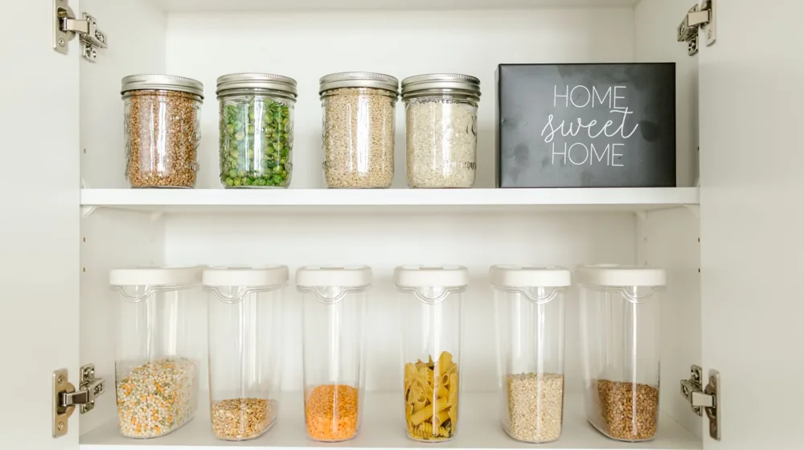

음식 버리기 전 필수 확인! 유통기한vs소비기한, 식품별 보관법 완벽 정리
사진: https://kaboompics.com/ / Pexels (무료 이미지, 출처 표기)
음식을 버리기 전, 잠깐! 유통기한 vs 소비기한부터 알아야 합니다

냉장고 속 유통기한이 지난 식품을 발견했을 때, 무심코 버리시나요? 많은 분이 유통기한이 지나면 무조건 못 먹는다고 생각하지만, 사실은 그렇지 않습니다. 2023년부터 국내 식품 표기 기준이 유통기한(Sell-by date)에서 소비기한(Use-by date)으로 전환되면서, 음식물 쓰레기를 줄이고 식품을 더 안전하게 소비할 수 있게 되었는데요. 이 글에서는 헷갈리는 두 기한의 차이점부터 식품별 현명한 보관법까지, 음식물 쓰레기를 줄이고 식비를 절약하는 실질적인 정보를 알려드립니다.
유통기한 vs 소비기한, 이제 헷갈리지 마세요!
유통기한과 소비기한은 식품의 안전성과 관련된 중요한 정보지만, 그 의미는 명확히 다릅니다. 이 둘의 차이를 정확히 이해하는 것이 식품을 현명하게 관리하는 첫걸음입니다.
식품의약품안전처에 따르면, 소비기한은 식품이 제조된 후 보관 방법만 잘 지켜진다면 안전하게 먹을 수 있는 기간을 말합니다. 따라서 유통기한이 지났더라도 소비기한이 남아있고, 보관 상태가 양호하다면 충분히 섭취할 수 있습니다.
유통기한 지난 음식, 정말 버려야 할까?
유통기한이 지났다는 이유만으로 음식을 버리는 것은 아깝습니다. 소비기한을 알면 많은 식품을 안전하게 더 오래 즐길 수 있습니다. 물론, 개봉 여부와 보관 상태에 따라 실제 소비기한은 달라질 수 있습니다. 다음은 2026년 10월 기준, 일반적인 식품들의 소비기한 정보입니다.
- 우유: 냉장 보관 시 유통기한 후 최대 45일까지 섭취 가능하다고 알려져 있습니다. 다만 개봉 후에는 빨리 섭취해야 합니다.
- 요구르트: 냉장 보관 시 유통기한 후 10일 이내에 섭취하는 것이 좋습니다.
- 액상 커피: 냉장 보관 시 유통기한 후 30일 이내 섭취할 수 있습니다.
- 라면: 봉지 라면은 제조일로부터 최대 8개월까지, 컵라면은 최대 6개월까지 섭취 가능하다고 알려져 있습니다.
- 빵: 식빵의 경우 유통기한 후 냉장 보관 시 2~3일, 냉동 보관 시 최대 20일까지 섭취 가능합니다.
- 통조림: 캔에 표기된 유통기한은 제조일로부터 5~7년까지 매우 길지만, 개봉하지 않은 상태로 서늘한 곳에 보관 시 기한 후에도 몇 년 더 보관 가능합니다.
이러한 기간은 어디까지나 일반적인 권장사항이며, 식품의 색깔, 냄새, 형태에 이상이 있다면 섭취하지 않는 것이 안전합니다. 정확한 사항은 공식 홈페이지나 해당 기관에서 다시 확인하시길 권장합니다.
식품 종류별 올바른 보관법: 냉장, 냉동, 실온
소비기한까지 식품을 안전하게 유지하려면 올바른 보관법이 필수적입니다. 식품 종류와 특성에 맞춰 보관 온도를 지키고, 외부 오염을 막는 것이 중요합니다.
냉장 보관 식품 (0~10°C)
- 달걀: 뾰족한 부분이 아래로 향하게 하여 냉장고 안쪽에 보관합니다. 냉장고 문 쪽은 온도 변화가 커서 피하는 것이 좋습니다.
- 우유, 유제품: 개봉 후에는 밀폐하여 냉장고 안쪽에 보관하고 가급적 빨리 섭취합니다.
- 채소 및 과일: 습기에 약한 채소는 신문지나 키친타월로 감싸 비닐 팩에 넣어 보관하고, 과일은 종류에 따라 개별 포장하여 보관합니다.
- 육류 및 어류: 밀폐 용기에 넣어 냉장고 가장 차가운 칸에 보관하며, 2~3일 내 섭취할 계획이 없다면 바로 냉동하는 것이 좋습니다.
냉동 보관 식품 (-18°C 이하)
- 육류 및 어류: 한 번 먹을 만큼 소분하여 밀폐 용기나 지퍼백에 넣어 얼립니다. 해동 후 재냉동은 피해야 합니다.
- 밥, 빵: 식힌 밥은 한 끼 분량으로 소분하여 밀폐 용기에 담아 얼리고, 빵은 슬라이스 하여 랩으로 감싸 냉동합니다.
- 다진 마늘, 파: 얼음 틀에 얼려 필요한 만큼만 꺼내 쓸 수 있도록 보관하면 편리합니다.
실온 보관 식품 (10~25°C)
- 통조림, 병조림: 서늘하고 건조한 곳에 보관하며, 개봉 후에는 밀폐 용기에 담아 냉장 보관해야 합니다.
- 라면, 과자: 직사광선을 피해 서늘하고 건조한 곳에 보관하고, 개봉 후에는 밀폐하여 습기가 들어가지 않게 합니다.
- 곡물, 견과류: 습기와 해충에 취약하므로 밀폐 용기에 담아 서늘한 곳에 보관합니다. 장기 보관 시 냉장 보관도 좋은 방법입니다.
개봉 후 유통기한, 이것만 기억하세요!
식품의 유통기한이나 소비기한은 '미개봉 상태'를 기준으로 합니다. 일단 개봉하게 되면 외부 공기, 습기, 미생물 등에 노출되면서 변질이 빠르게 진행될 수 있습니다. 따라서 제품 라벨에 표시된 '개봉 후 보관 및 섭취 방법'을 반드시 확인하고 따르는 것이 중요합니다.
- 음료: 개봉 후 냉장 보관 시 2~3일 내 섭취를 권장합니다.
- 잼, 소스류: 개봉 후에는 반드시 냉장 보관하고, 사용 시 깨끗한 스푼을 사용하여 교차 오염을 방지합니다.
- 식용유: 개봉 후 공기 접촉을 최소화하고 서늘한 곳에 보관하며, 산패가 느껴지면 폐기합니다.
개봉 후에는 유통/소비기한과 관계없이 식품의 상태를 꼼꼼히 확인하여 이상이 있을 경우 섭취를 피해야 합니다.
식품 보관 시 주의할 점 & 활용 팁
식품을 더욱 신선하고 안전하게 보관하기 위한 몇 가지 추가적인 팁입니다.
- 온도 관리: 냉장고는 적정 온도(0~5°C)를 유지하고, 문을 자주 여닫지 않아 내부 온도 변화를 최소화합니다.
- 선입선출 원칙: 먼저 구입한 식품을 먼저 소비하는 습관을 들여 묵은 식품이 쌓이지 않도록 합니다.
- 밀폐 용기 활용: 식품을 밀폐 용기에 담아 보관하면 공기 접촉을 줄이고 냄새 섞임을 방지할 수 있습니다. 투명 용기를 사용하면 내용물을 쉽게 확인할 수 있어 편리합니다.
- 청결 유지: 냉장고 내부를 정기적으로 청소하고, 식품 용기는 깨끗하게 관리하여 세균 번식을 막습니다.
자주 묻는 질문
식품 유통기한 및 보관에 대해 독자들이 궁금해할 만한 질문들을 모아 답변해 드립니다.
Q1. 냉장고에 넣어둔 과일은 유통기한이 더 길어지나요?
A1. 과일은 일반적으로 유통기한이 명확히 표기되지 않는 경우가 많습니다. 냉장 보관은 신선도를 유지하는 데 도움이 되지만, 모든 과일이 냉장 보관에 적합한 것은 아닙니다. 바나나, 토마토 등은 냉장 보관 시 맛이나 식감이 변할 수 있으니 종류별 보관법을 따르는 것이 중요합니다.
Q2. 직접 만든 반찬의 보관 기간은 어떻게 되나요?
A2. 직접 만든 반찬은 방부제나 첨가물이 없어 시판 제품보다 보관 기간이 짧습니다. 냉장 보관 시 보통 2~3일 이내 섭취하는 것이 좋으며, 육류나 어류가 들어간 반찬은 더 짧게 보는 것이 안전합니다. 빠르게 소진하거나 한 끼 분량으로 소분하여 냉동 보관하는 것을 추천합니다.
Q3. 식품 포장지가 손상된 경우 어떻게 해야 하나요?
A3. 식품 포장지가 손상되면 외부 오염 물질이나 공기가 침투하여 식품 변질이 가속화될 수 있습니다. 유통/소비기한이 충분히 남아 있더라도 안전을 위해 섭취하지 않거나, 즉시 밀폐 용기에 옮겨 담아 빠르게 소비하는 것이 좋습니다. 육안으로 변색이나 곰팡이가 보인다면 즉시 폐기해야 합니다.
🔗 이 글도 함께 보면 좋아요: 공예 선물, 실패 없는 성공법? 후기와 주의사항 완벽 정리
관련 추천 상품
음식 보관 용기, 밀폐 용기, 냉장고 정리함 관련 인기 상품 보러가기
이 포스팅은 쿠팡 파트너스 활동의 일환으로, 이에 따른 일정액의 수수료를 제공받습니다.